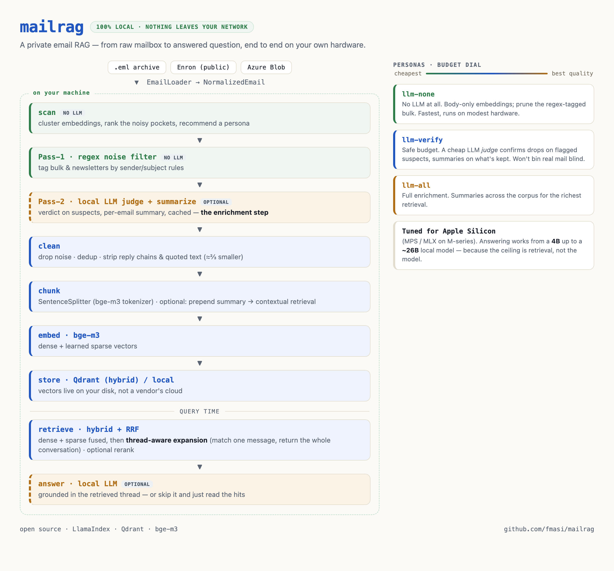
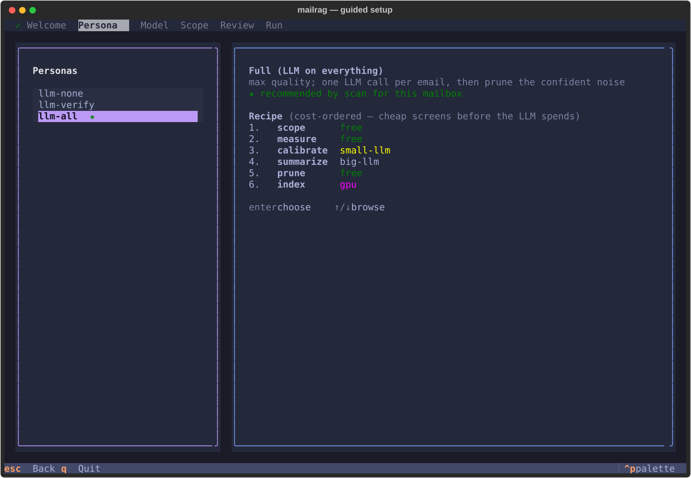
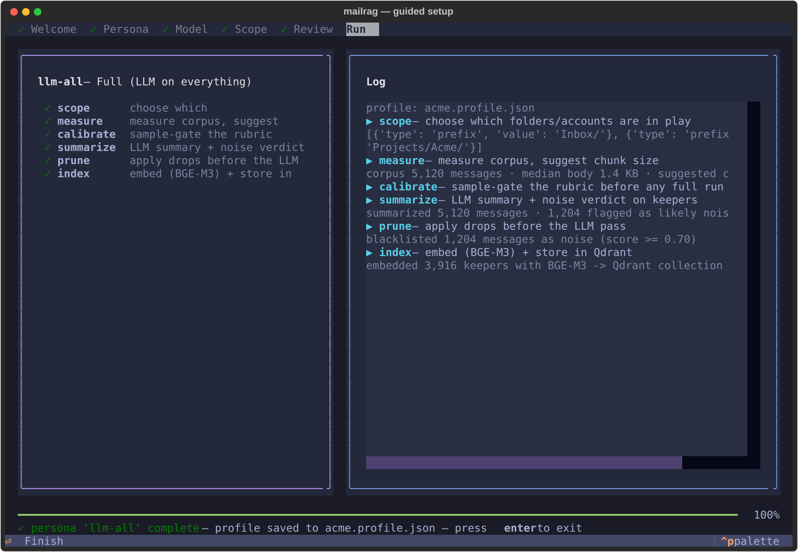

Turns a mail archive into a queryable knowledge base — hybrid dense+sparse retrieval, thread-aware answers assembled from whole conversations, optional local-LLM cleanup, and an MCP server so your agents can use all of it. Runs on your hardware, on open models, with nothing required to leave your network.
$ git clone https://github.com/fmasi/mailrag && cd mailrag $ make demo # two indexes, same questions — what context buys → plain R@5 60.6% with context R@5 73.7% (McNemar p=0.0044, public Enron) → spanning questions: right conversation found 97.3% @5; top-5 messages give you 52.6% of it, thread expansion 100% $ ./mailrag ask "who approved the Q3 budget, and when?" → retrieves the matching message, expands to its full thread, and answers from the whole conversation — with citations. $ make bench # check the retrieval claim yourself — no LLM, no key → dense R@5 94.4 [91.6, 96.4] dense+sparse R@5 97.5 [95.3, 98.7] paired @5: fixes 12, breaks 1 — McNemar p=0.0034
Making your mailbox searchable by an AI usually means handing your entire email history to someone else's servers. For your real correspondence, that's a non-starter.
So I built the opposite: an email RAG you run yourself, on your hardware, on open models, with nothing required to leave your network. What comes out goes past search. These emails are private context my own AI agents can draw on for total recall, without renting my memory to anyone. mailrag covers email. parley covers calls and meetings. Independent tools, and my agents know about both and reach for whatever fits.
The flagship: match a single message, then answer from its entire conversation. Lifts recall@5 from 64.2% (message-level) → 93.3% (thread-level). Biggest single lever in the system, and it needs no LLM.
bge-m3 dense + learned sparse vectors, RRF-fused in Qdrant. Gets both the concept and the rare exact token: acronyms, IDs, reference numbers.
Reply-chain stripping, calendar-invite collapsing, noise/newsletter filtering, and exact-text chunk dedup.
Text pulled from PDFs, Office files, HTML and images, with OCR for scans (local Tesseract or a local vision model). Each attachment is chunked by its own structure: spreadsheet rows with a repeated header, PDF pages, deck slides. A number buried in a 500-row sheet stays findable, and every chunk traces back to its email and thread.
Optional summarize step: a local LLM writes a per-email summary + noise judgement, content-addressed and cached so re-runs are free. Local by default, and it points at any OpenAI-compatible server (LM Studio, Ollama, vLLM, NVIDIA NIM, OpenAI) with one env var.
A collection built from a backup is a snapshot that quietly rots. ./mailrag sync pulls new mail from a live account and indexes only the delta, so the index runs 1–2 days fresh instead of frozen at its export date. Deterministic point ids mean re-indexing replaces rather than duplicates, and the content-addressed cache means only new mail costs an LLM call.
The public Enron corpus and local .eml archives sit behind one EmailLoader. IMAP and Maildir sit behind a MessageSource seam with opaque cursors, so Gmail, JMAP or Graph slot in without a schema change.
A 360-query eval that prices every technique, controls for confounds and reports significance. In several cases it overturned the intuitive choice.
A multi-collection, read-only Model Context Protocol server (./mailrag mcp, MCP SDK v2): any agent can discover your indexed corpora, search and fetch whole threads, regex-grep the raw .eml corpus where embeddings are blind, ask grounded questions, and read attachment text. Seven tools, no internals exposed.
From a raw mailbox to an answered question — every stage runs on your own hardware.

./mailrag wizard is a full-screen terminal app
(Textual): pick a cost-ordered persona, scope your
folders on a tree, review the exact plan, then watch every step run live. Two human checkpoints —
the calibrate gate and confirm-before-spend — keep you in control before any LLM cost.


Screenshots are auto-generated from the real app against a synthetic mailbox — see the full walkthrough.
Stacking the ladder — each technique added one at a time and individually measured on 360 real-email questions. recall@5 = how often the right email lands in the top 5 results:
| Technique | recall@5 | gain |
|---|---|---|
| plain dense (baseline) | 45.6% | — |
| + learned sparse | 48.9% | +3.3 |
| + contextual summary | 61.7% | +12.8 |
| + reranking | 64.2% | +2.5 |
| + thread reconstruction ★ | 93.3% | +29.1 |
★ The final step switches the goal from "find the exact email" to "find its thread", a legitimately easier and more useful target. Both of the big levers (thread reconstruction +29.1, contextual summary +12.8) come from understanding the conversation rather than from a fancier embedding model. Read the full benchmark →
Where the ladder comes from. A real work mailbox, 360 questions, each with a known correct answer, so the scoring uses hard labels and no subjective judging. Cross-checked on 360 public Enron-QA questions, which put the arms in the same order and rule out a quirk of one inbox. All references anonymized. These figures come from a private corpus, so treat them as author-reported.
The winner flips with the task. Run the identical comparison on legal e-discovery (three TREC Legal topics, real human judgments) and the order reverses: a general-purpose dense+rerank stack, NVIDIA's retrieval NIMs, wins there. The obvious objection is the right one. Their stack is built and tuned for general retrieval, not for email, and it is very good at that. The finding is that specialising for a task beats general-purpose on that task, and email is a task worth specialising for. Three topics is low statistical power, so read it as a direction rather than a score.
What a stranger can reproduce.
make demo now covers both of the big levers on 1,200 public Enron emails. Contextual
embedding takes R@5 from 60.6% to 73.7% (McNemar p=0.0044), and on 73 questions whose answers
span several messages it finds the right conversation 97.3% of the time at top-5, where the top-5
messages give you only 52.6% of that conversation and thread expansion gives you all of it.
make bench then scores the retrieval layer: 360 committed queries against 2 000
public Enron-QA documents in a couple of minutes, no key and no private data, printing
R@5 94.4% dense vs 97.5% dense+learned-sparse (95% Wilson [91.6, 96.4] vs [95.3, 98.7]).
Those intervals overlap, so it reports the paired test too, since both arms answer the same
queries: learned-sparse fixes 12 and breaks 1, McNemar exact p=0.0034. Zero LLM calls,
1.6 min on an M5 Pro GPU and 14.7 min CPU-only. Widen the distractor pool 5× with
make bench SIZE=large and the advantage grows instead of shrinking (+4.4pp,
p=0.0001), which is the directional claim that matters.
Scope, stated plainly. make bench
checks the hybrid retrieval layer alone, with reranking switched off because it needs a
paid endpoint. Between them the two commands reproduce the mechanisms but not the magnitude: the
45.6→93.3 ladder was measured on a 32,000-email archive and stays author-reported. Every figure
on this page is tracked in the
claims register with the
script that produced it and the date it last ran. Full write-up in the
benchmark post and the
case study.
A unittest-style suite covering the pipeline, the retrieval seams, the MCP tools and the sync machinery. A green pytest is a required check before anything reaches main.
ruff (lint + format), mypy, pytest, pip-audit and CodeQL each run as a separately named status. The pip-audit ignore list is deliberately empty. Advisories get fixed or pinned around, never waved through.
The Qdrant server image is pinned by digest; the client is capped below a release that silently removed a symbol. Every pin carries an in-tree comment saying why it exists and when to lift it. Zero open Dependabot alerts.
mailrag is built to be one node in a private context stack — the pieces that make it reachable by agents and keep its memory current are now in. The first tagged release, v0.9.0, marks it feature-complete and in daily use; 1.0.0 follows once the gaps named in the roadmap close.
A multi-collection stdio server exposes seven tools: list_collections, search_email, get_thread (an exact key lookup rather than a second retrieval pass), grep_email, answer_question, and attachment list/fetch. Any agent, yours or a teammate's, can query your mail without touching the internals.
./mailrag sync moves mailrag from one-time imports to incremental ingest: a living context source, not a static snapshot. New mail is spooled as .eml and run through the same pipeline, so the cleaning rubric never drifts. Each stage degrades independently. Mail is still fetched when the LLM is down and still judged when the vector store is down, and the run picks up where it left off next time. On macOS a launchd agent keeps it running unattended.
./mailrag wizard is now a full-screen terminal app (Textual): pick a persona, scope folders on a tree, review the plan, and watch the run live, with the calibrate and confirm-before-spend gates as dialogs.